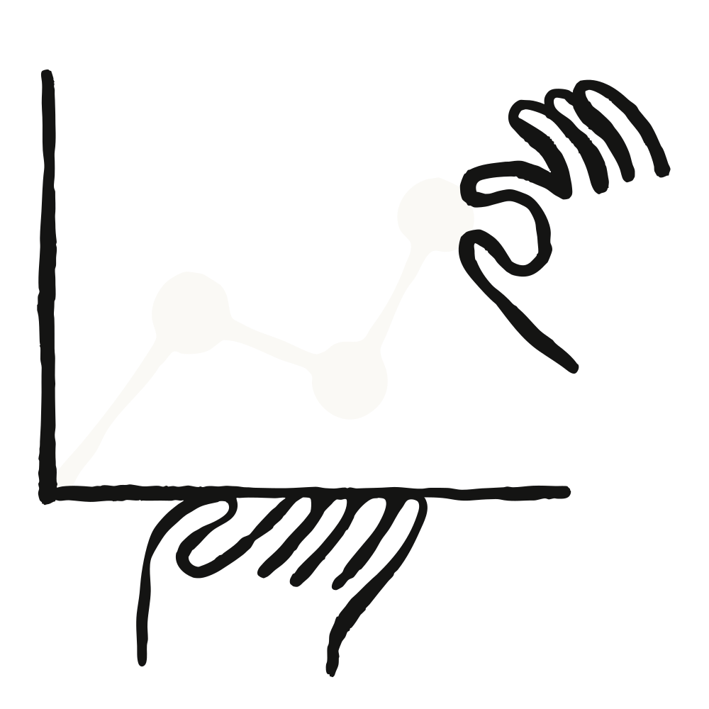
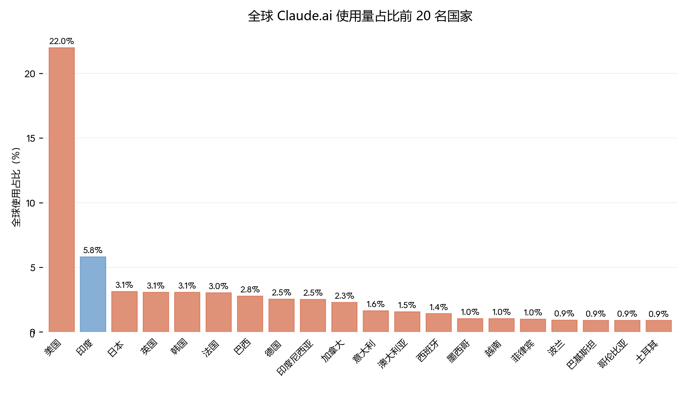

印度国家简报：Anthropic 经济指数
📖 中文摘要
专业术语注解
人均使用量（per-capita usage）：按人口平均计算的 AI 使用强度经济原语（economic primitives）：衡量 AI 使用方式的基础性指标速度提升（speedup）：AI 辅助相对于纯人工完成任务的时间压缩倍数自主权（autonomy）：用户把决策权交给 AI 的程度O*NET 任务分类：美国官方的标准化职业任务分类体系地理定位（geolocation）：根据 IP 等信号确定用户所在地区的方法📄 中文全文
- 分类： 经济研究（Economic Research）
- 来源： https://www.anthropic.com/research/india-brief-economic-index
经济研究（Economic Research） 2026 年 2 月 16 日

执行摘要
印度已经是世界上最大的 IT 服务出口国，同时也是全球增长最快的 AI 用户群体所在地之一。了解 AI 在印度是如何被使用的——以及它与其他国家有何不同——对于制定该国的 AI 政策、投资和部署至关重要。本简报基于第四份 Anthropic 经济指数报告的数据，提供关于 Claude.ai 在印度使用情况的洞察；该报告涵盖 2025 年 11 月全球约 100 万次 Claude.ai 对话。印度占 Claude.ai 总使用量的 5.8%，仅次于美国。然而，目前的应用仍然集中，这表明在更广泛的人群中扩大普及存在重大机遇。 研究结果表明，印度的用户群体更侧重在专业场景中使用 AI，赋予 AI 更多的自主权，并且交给 Claude 的任务在没有辅助的情况下完成起来要耗费更多时间。人类无法独立完成的复杂任务占比更高，表明印度用户正处于该技术应用的前沿。
印度是全球 AI 应用领先的国家之一
按 Claude.ai 总使用量占比计算，印度在所有国家中排名第二，仅次于美国。然而，按人均计算——即根据劳动年龄人口进行调整后——在观测量充足的 116 个国家中，印度排在第 101 位，低于新加坡或马来西亚等亚洲其他国家。这一差距表明，印度 Claude 总体使用量高反映的是其庞大的人口规模，而非普通人重度使用 Claude。这指向了提高普及率的重大机遇。

图 1. 按全球 Claude.ai 使用量占比排名前 20 的国家。印度占全球 Claude.ai 消费者使用量的 5.8%，仅次于美国。条形显示的是每个国家在 2025 年 11 月 13 日至 20 日观察到的总对话量中的占比。印度以蓝色突出显示；全球 N = 975,160 次对话。印度国内的使用集中度
地理集中度
使用集中在少数经济活动高度活跃的邦。马哈拉施特拉邦、泰米尔纳德邦、卡纳塔克邦和德里合计占印度 Claude.ai 总使用量的一半以上。这一格局与印度 IT 行业的地理分布和城市经济产出高度吻合。
 图 2. 各邦占印度 Claude.ai 使用量的比例。地图显示每个邦占印度 Claude.ai 总使用量的比例。排名前列的邦：马哈拉施特拉邦（15.5%）、泰米尔纳德邦（13.2%）、卡纳塔克邦（12.7%）、德里（10.5%）。灰色区域表示数据不足。2025 年 11 月数据。地图的 Shapefile 来自 Natural Earth。
图 2. 各邦占印度 Claude.ai 使用量的比例。地图显示每个邦占印度 Claude.ai 总使用量的比例。排名前列的邦：马哈拉施特拉邦（15.5%）、泰米尔纳德邦（13.2%）、卡纳塔克邦（12.7%）、德里（10.5%）。灰色区域表示数据不足。2025 年 11 月数据。地图的 Shapefile 来自 Natural Earth。
这四个邦——班加罗尔、海得拉巴、金奈、孟买和德里国家首都区（NCR）所在地——的集中使用表明，当前 AI 应用主要由印度既有的技术劳动力驱动，而非广泛的消费者采用。
职业任务集中度
印度 Claude.ai 使用的职业构成（通过将任务映射到相关职业来推断）偏向软件开发和工程类岗位，与该国庞大的 IT 服务业相符。
 图 3. 印度按 Claude.ai 使用量划分的职业群体。水平条形显示每个 SOC 职业群体占印度 Claude.ai 使用量的比例。橙色标记表示用于比较的全球平均值。2025 年 11 月数据。
印度用户执行的最常见 ONET 任务证实了这种以软件为主的画像：
图 3. 印度按 Claude.ai 使用量划分的职业群体。水平条形显示每个 SOC 职业群体占印度 Claude.ai 使用量的比例。橙色标记表示用于比较的全球平均值。2025 年 11 月数据。
印度用户执行的最常见 ONET 任务证实了这种以软件为主的画像：
 表 1. 印度 Claude 使用中最常见的 ONET 任务。部分任务名称已为便于阅读而缩短。
印度在软件相关任务占 AI 使用量的比例方面位居全球第一（占所有 O*NET 映射任务的 45.2%），领先于越南（42.1%）和埃及（39.2%）。教育类任务既出现在最常见的单项任务中（见表 1），也出现在聚合为职业群体时（见图 3），这表明学习和教学也是常见的用例。
表 1. 印度 Claude 使用中最常见的 ONET 任务。部分任务名称已为便于阅读而缩短。
印度在软件相关任务占 AI 使用量的比例方面位居全球第一（占所有 O*NET 映射任务的 45.2%），领先于越南（42.1%）和埃及（39.2%）。教育类任务既出现在最常见的单项任务中（见表 1），也出现在聚合为职业群体时（见图 3），这表明学习和教学也是常见的用例。
经济原语：印度使用 AI 的独特方式
我们最新的经济指数报告引入了「经济原语」（economic primitives）——即对人类与 AI 如何协作的基本测量。将印度与全球平均水平进行比较，可以发现几种独特模式。
 图 4. 将印度的 Claude.ai 使用情况与全球平均水平进行比较。这些面板在九项经济原语上对印度（N = 58,098）与全球平均水平（N = 975,160）进行比较。2025 年 11 月数据。
图 4. 将印度的 Claude.ai 使用情况与全球平均水平进行比较。这些面板在九项经济原语上对印度（N = 58,098）与全球平均水平（N = 975,160）进行比较。2025 年 11 月数据。
更大的生产力加速。 印度用户平均用 14.8 分钟完成需要 3.8 小时才能完成的任务——实现了 15 倍的加速。在全球范围内，用户平均用 15.4 分钟完成需要 3.1 小时才能完成的任务——实现了 12 倍的加速。这表明 AI 在印度用户交给它的更复杂任务上带来了超常规的生产力收益。 更强的工作导向。 印度 Claude.ai 使用中有 51.3% 与工作相关，而全球为 46%。课程作业占 20.9%（全球为 19.3%），个人使用占 27.8%（全球为 34.7%）。工作占比高、个人使用占比低的画像，与印度庞大的专业服务行业以及主报告中的发现——即人均 GDP 较低的国家倾向于工作用途和课程作业而非个人使用——相一致。 更高的 AI 自主性。 印度用户赋予 AI 更多的决策自主权（在 1–5 的评分标准上为 3.60，全球为 3.38；其中 1 表示不授权，5 表示极度授权）。这表明印度用户更愿意让 AI 独立运作，而不是纯粹将其作为辅助工具使用。 较低的人类独立完成能力。 我们测量的数据点之一是：AI 是否被用于做人类无法独自完成的事情，例如用他们不懂的语言编写代码。我们发现 84.6% 的任务人类可以独立完成（全球为 87.9%），这表明印度用户更频繁地将自己难以独立完成的任务交给 AI。 提示技能很重要。 作为人类和 AI 为对话所带来技能的代理指标，我们估算了理解对话中的用户提示或 AI 回答所需的受教育年限。我们发现，提示的人类受教育水平（12.2 年）与回答的 AI 受教育水平（12.5 年）相对接近，这反映了「输入质量塑造输出质量」的全球模式。比较各国 AI 受教育水平的平均值，印度位列前 10%，表明印度用户正在从 Claude 获得高水平的输出。
影响
扩大 AI 的经济影响需要超越软件和 IT 服务领域。 45.2% 的任务映射到软件相关职业——这一比例在任何国家中都是最高的。四个邦（马哈拉施特拉邦、泰米尔纳德邦、卡纳塔克邦和德里）合计占总使用量的一半以上。这反映了印度 IT 行业的地理分布，表明当前的 AI 应用在很大程度上是既有专业优势和以 IT 为中心的工作流程的延伸。 投资 AI 可以带来可观的、可衡量的生产力收益。 印度用户将 AI 应用于原本需要 3.8 小时的任务，将其压缩到约 15 分钟——实现了 15 倍的加速，而全球为 12 倍。这意味着印度已经在从 AI 中获取巨大价值：承担更困难的任务，并将完成这些任务所需的时间压缩得比全球平均水平更深。 缩小绝对使用量与人均使用量之间的差距需要解决结构性障碍。 印度在总使用量上排名第 2，但在人均使用量上排名第 101。这两个数字之间的差距既反映了印度庞大的人口规模，也反映了当前应用分布的狭窄集中度。在全球范围内，人均 AI 应用与人均收入高度相关。印度的人均使用量与此关系所预测的结果一致。如果不在收入、数字基础设施以及 IT 行业之外的认知度等方面解决结构性障碍，印度的 AI 应用很可能继续保持集中。 拥抱 AI 自主性似乎正在为印度用户带来良好回报。 更高的自主性得分、更长的基线任务时间以及频繁用于人类可独立完成的任务，这些都表明印度专业人士正在信任 AI 做出决策，并利用它来增强人类能力。 投资 AI 技能可能带来高回报。 全球数据中提示复杂程度与回答质量之间的强相关性表明，专注于有效使用 AI 的培训项目——尤其是面向印度当前以 IT 为主的用户群体之外的劳动者——可以显著提高更广泛 AI 应用所带来的回报。
方法论
本分析基于 2025 年 11 月 13 日至 20 日期间 Claude.ai 消费者使用的隐私保护数据，详见第四份 Anthropic 经济指数报告。经济原语使用该报告中详述的方法论计算。地理归属使用基于 IP 的地理定位。职业和任务分类基于与 O*NET 任务分类法和 SOC 职业群体的映射。对于国家层面的排名，我们只纳入样本中至少包含 200 个观测值的国家，因为在我们的随机样本中，低使用量国家的测量存在不确定性。基础数据包括 Claude.ai 的 Free、Pro 和 Max 使用情况。 有关完整方法论、全球发现和时间序列分析，请参阅Anthropic 经济指数 2026 年 1 月报告。
_
_引用
@online{appel2026indiacountrybrief,
author = {Ruth Appel},
title = {India Country Brief: The Anthropic Economic Index},
date = {2026-02-16},
year = {2026},
url = {https://www.anthropic.com/research/india-brief-economic-index},
}
致谢
Sally Aldous, Jake Eaton, Ria Strasser Galvis, Hanah Ho, Maxim Massenkoff, Peter McCrory, Jared Mueller, Emily Pastewka, Sarah Pollack, Nitarshan Rajkumar, David Saunders, Alexandra Sanderford, Kim Withee.
相关内容
进一步了解 Claude 的数学能力
一个未公开发布的研究版 Claude 在与黎曼猜想（Riemann hypothesis）相关的问题上取得了进展。它改进了满足该猜想的黎曼 zeta 函数零点比例的长期下界，将其从 41.6% 提高到 67.2%。 了解更多
用 Claude 发现密码学弱点
密码算法。第一个攻击显著削弱了 HAWK——一种为未来量子计算机能够破解现有标准的世界而构建的数字签名方案。第二个攻击则发现了一种攻击轮数缩减版 AES（使用最广泛的对称密码）的新方法。 了解更多
Project Pilot：AI 能控制无人机吗？
我们与 Andon Labs 合作开发了一系列评估，用于评估 AI 模型使用飞行无人机的能力，最终形成了一个新的基准测试：Drone-Bench。 了解更多
▸ 英文原文（点击展开）
India Country Brief: The Anthropic Economic Index
- Category: Economic Research
- Source: https://www.anthropic.com/research/india-brief-economic-index
Economic Research
India Country Brief: The Anthropic Economic Index
Feb 16, 2026
Executive summary
India, already the world’s largest exporter of IT services, is home to one of the world’s fastest-growing AI user bases. Understanding how AI is being used in India—and how it differs from other countries—is essential for informing AI policy, investment, and deployment in the country. This brief provides insights on Claude.ai use in India, drawing on data from the fourth Anthropic Economic Index report covering ~1 million Claude.ai conversations globally during November 2025. India accounts for 5.8% of total Claude.ai use, second only to the United States. Yet current adoption remains concentrated, pointing to significant opportunities to expand access more broadly across the population. The findings point to a user base that applies AI more heavily in professional contexts, delegates more autonomy to it, and brings Claude tasks that are substantially more time-consuming to complete without assistance. Higher shares of complex tasks that humans could not complete alone suggest that Indian users are using the technology at the frontier.
India is among the leading countries in global AI adoption
India ranks second among all countries by share of total Claude.ai use, trailing only the United States. However, on a per-capita basis, adjusting for the working-age population, India ranks 101st out of 116 countries with sufficient observation volume, below other countries in Asia such as Singapore or Malaysia. This gap suggests that India’s high Claude use overall reflects the sheer size of its population, not that the average person is using Claude heavily. This points to significant opportunities to increase adoption.
Figure 1. Top 20 countries by share of global Claude.ai use. India accounts for 5.8% of global Claude.ai consumer use, second only to the United States. Bars show each country’s share of total conversations observed November 13–20, 2025. India highlighted in blue; N = 975, 160 conversations globally.
Concentrated use within India
Geographic concentration
Use is concentrated in a small number of highly economically active states. Maharashtra, Tamil Nadu, Karnataka, and Delhi together account for over half of India’s total Claude.ai use. This pattern closely mirrors India’s IT sector geography and urban economic output.
Figure 2. Share of India's Claude.ai use by state. Map shows each state’s share of India’s total Claude.ai use. Top states: Maharashtra (15.5%), Tamil Nadu (13.2%), Karnataka (12.7%), Delhi (10.5%). Gray regions indicate insufficient data. November 2025 data. Shapefile for the map from Natural Earth.
The concentration in these four states—home to Bangalore, Hyderabad, Chennai, Mumbai, and Delhi NCR—suggests that current AI adoption is driven primarily by India’s established technology workforce rather than broad-based consumer uptake.
Concentration of occupational tasks
The occupational mix of Indian Claude.ai use, inferred by mapping tasks to related occupations, skews towards software development and engineering roles, consistent with the country’s large IT services sector.
Figure 3. Occupation groups in India by Claude.ai use. Horizontal bars show the share of Indian Claude.ai use attributable to each SOC occupation group. Orange markers indicate the global average for comparison. November 2025 data.
The most common ONET tasks performed by Indian users confirm the software-heavy profile:
Table 1. Most common ONET tasks among Claude use in India. Some task names shortened for readability.
India ranks 1st globally in the share of AI use devoted to software-related tasks (45.2% of all O*NET-mapped tasks), ahead of Vietnam (42.1%) and Egypt (39.2%). The presence of educational tasks among the most common individual tasks (see Table 1) and when aggregating tasks to occupation groups (see Figure 3) indicates other common use cases in learning and instruction.
Economic primitives: how India uses AI differently
Our latest Economic Index report introduces “economic primitives”—fundamental measurements of how humans and AI collaborate. Comparing India to the global average reveals several distinctive patterns.
Figure 4. Comparing India's Claude.ai use to the global average. The panels compare India (N = 58,098) against the global average (N = 975,160) across nine economic primitives. November 2025 data.
Greater productivity speedup. Indian users take on average 14.8 minutes to complete tasks with AI that would take 3.8 hours without AI—a 15x speedup. Globally, users take on average 15.4 minutes to complete tasks that would take 3.1 hours without AI—a 12x speedup. This suggests that AI is delivering outsized productivity gains on the more complex tasks Indian users bring to it. Stronger work orientation. 51.3% of Indian Claude.ai use is work-related, compared to 46% globally. Coursework accounts for 20.9% (vs. 19.3% globally) and personal use for 27.8% (vs. 34.7% globally). The work-heavy, lower-personal-use profile is consistent with India’s large professional services sector and the finding from the main report that lower-GDP-per-capita countries tend towards work and coursework over personal use. Higher AI autonomy. Indian users delegate more decision-making autonomy to AI (3.60 vs. 3.38 globally on a 1–5 scale, where 1 means no delegation and 5 means extreme delegation). This suggests greater willingness to let AI operate independently rather than using it purely as an assistant. Lower human-only ability. One of the data points we measure is whether AI is being used to do something a human couldn’t do on their own, like writing code in a language they don’t know. We find that 84.6% of tasks could be completed by a human alone (vs. 87.9% globally), suggesting Indian users more frequently bring tasks to AI that they could not easily accomplish independently. Prompting skills matter. As a proxy for the skills humans and AI bring to the conversation, we estimate the years of education someone would need to understand the user prompt or the AI response in a conversation. We find that the human education level of prompts (12.2 years) and AI education level of responses (12.5 years) are relatively similar, mirroring a global pattern where input quality shapes output quality. Comparing country averages for AI education, India ranks in the top 10%, indicating Indian users are getting sophisticated outputs from Claude.
Implications
Broadening AI’s economic impact will require looking beyond software and IT services. 45.2% of tasks map to software-related occupations—the highest share of any country. Four states (Maharashtra, Tamil Nadu, Karnataka, and Delhi) account for over half of all use. This mirrors the geography of India’s IT sector and suggests that current AI adoption is largely an extension of existing professional strengths and workflows focused on IT. Investing in AI can provide substantial and measurable productivity gains. Indian users apply AI to tasks that would otherwise take 3.8 hours, compressing them to ~15 minutes—a 15x speedup, compared to 12x globally. This means that India is already extracting significant value from AI: bringing harder tasks and compressing the time needed to complete these tasks further than the global average. Closing the gap between absolute and per-capita use requires addressing structural barriers. India ranks 2nd in total use but 101st in per-capita use. The gap between these two figures reflects both India’s large population and how narrowly concentrated current adoption is. Globally, per-capita AI adoption is strongly correlated with per-capita income. India’s per-capita use is consistent with what this relationship would predict. Without addressing structural barriers related to income, digital infrastructure, and awareness outside the IT sector, Indian AI adoption is likely to remain concentrated. Embracing AI autonomy appears to be serving Indian users well. Higher autonomy scores, longer baseline task times, and frequent use for tasks humans could do alone suggest that Indian professionals are trusting AI to make decisions and using it to enhance human capabilities. Investing in AI skills could have high returns. The strong correlation between prompt sophistication and response quality in the global data suggests that training programs focused on effective AI use—particularly for workers outside India’s current IT-heavy user base—could meaningfully improve the returns from wider AI adoption.
Methodology
This analysis draws on privacy-preserving data from Claude.ai consumer use from November 13–20, 2025, as described in the fourth Anthropic Economic Index report. Economic primitives are computed using the methodology detailed in that report. Geographic assignment uses IP-based geolocation. Occupation and task classification are based on mappings to the O*NET task taxonomy and SOC occupation groups. For country-level rankings, we only include countries with at least 200 observations in our sample because of the uncertainty of the measure for low-usage countries in our random sample. The underlying data includes Claude.ai Free, Pro, and Max usage. For the full methodology, global findings, and time-series analysis, see theAnthropic Economic Index January 2026 report.
_
_Citation
@online{appel2026indiacountrybrief,
author = {Ruth Appel},
title = {India Country Brief: The Anthropic Economic Index},
date = {2026-02-16},
year = {2026},
url = {https://www.anthropic.com/research/india-brief-economic-index},
}
Acknowledgements
Sally Aldous, Jake Eaton, Ria Strasser Galvis, Hanah Ho, Maxim Massenkoff, Peter McCrory, Jared Mueller, Emily Pastewka, Sarah Pollack, Nitarshan Rajkumar, David Saunders, Alexandra Sanderford, Kim Withee.
Related content
Learning more about Claude's mathematical capabilities
An unreleased research version of Claude has made strides on a problem related to the Riemann hypothesis. It improved a longstanding lower bound for the fraction of zeros of the Riemann zeta function that satisfy the hypothesis, increasing it from 41.6% to 67.2%. Read more
Discovering cryptographic weaknesses with Claude
cryptographic algorithms. The first attack significantly weakens HAWK, a digital signature scheme that was built for a future world where quantum computers are able to break existing standards. The second identifies a new way to attack round-reduced AES, the most widely used symmetric cipher. Read more
Project Pilot: Can AI control a drone?
Working with Andon Labs, we’ve developed a new series of evaluations that assess AI models’ ability to use a flying drone, culminating in a new benchmark: Drone-Bench. Read more